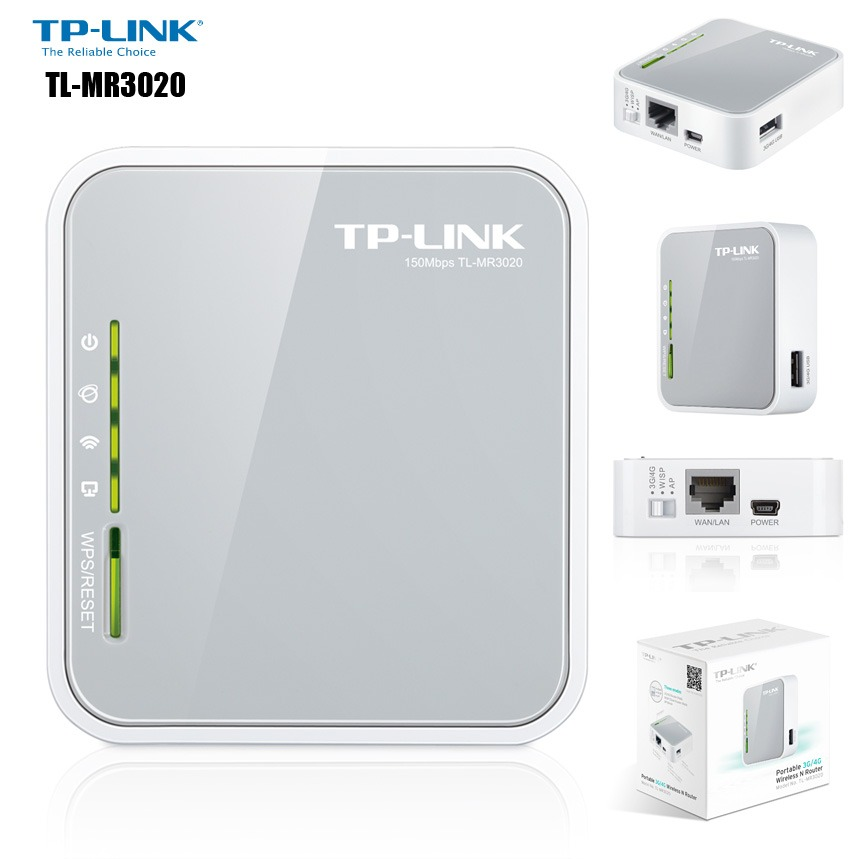

Network Pentesting Gadget
Convert a router into wifi pineapple

Abstract
A powerful, portable and easy to use device for wireless auditing. It is used as device for network penetration testing and knowing about the the connections in the vicinity. It is used to check the vulnerability of the devices used in the range of the device.
Exisiting Technology
Wifi Pineapple is a device made by Hack5 which exists for the same purpose but it is around 8 times costlier. This device is a need for penetration testers and researchers to know about the networks in their vicinity and used by many IT companies and firms for keeping their netowkrs safe and secure. The device I made is just an alternative for the wifi pineapple with little less features but very affordable at almost no price.
Motivation
Living in a hostel gives a lot of things to think upon. We use routers provided by the college to access the internet but no one knows how secure they are. Thinking upon how to check the security of these routers, I landed up on network pentesting. While reading about it, I got to know about the gadget - wifi pineapple which is not affordable for a student. I tried finding alternatives and got successful by making this.
Router used
Project Photo
Solution
The device was finally made which can be said as an alternative to the wifi pineapple. It cannot replace the wifi pineapple as this is not commercial but for a student its quite cheap to learn from and learn all about network pentesting.